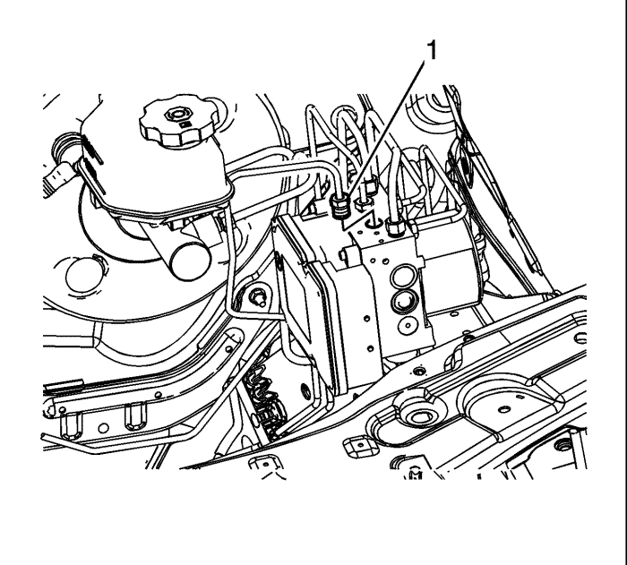
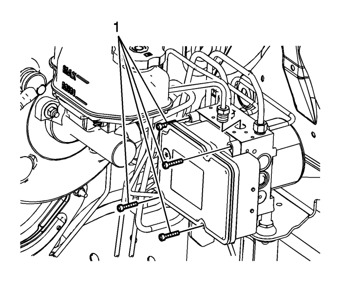
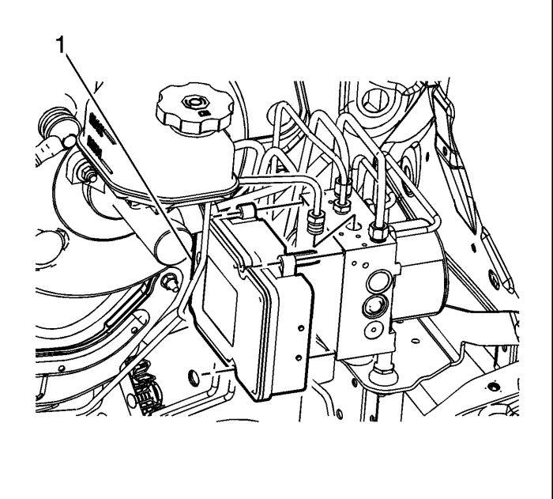

Sustitución del módulo de control de freno electrónico
Procedimiento de desmontaje
Advertencia: Consulte Advertencia de líquido de frenos irritante en la sección Prólogo.
Precaución: Consulte Advertencia sobre los efectos del líquido de frenos sobre la pintura y los componentes eléctricos en la sección Prólogo.
Atención: Conecte o desconecte siempre el conector del mazo de cables desde el EBCM/EBTCM con el interruptor de encendido en la posición OFF (desactivado). El incumplimiento de esta precaución podría ocasionar daños en el EBCM/EBTCM.

- Coloque el interruptor de encendido en la posición OFF.
- Desmonte el centro eléctrico bajo el capó.
- Sin evacuar el refrigerante ni desmontar los tubos flexibles, desmonte y sitúe a un lado la cámara de compensación del radiador. Consultar Sustitución del vaso de expansión del radiador : Diesel → Motores de gasolina .
- Limpie el área del módulo de control del freno electrónico (EBCM) a la válvula moduladora de presión del freno (BPMV) y elimine todos los restos de suciedad y residuos.
- Desemborne el conector eléctrico del EBCM levantando la palanca de encastre.
- Desconecte el racor (1) del tubo del freno delantero izquierdo de la BPMV.
- Tape el racor de la tubería de freno, y tapone la lumbrera de salida de la BPMV, para prevenir la pérdida de líquido de frenos y la contaminación.
- Con cuidado, coloque a un lado y fije el tubo del freno para dejar el espacio necesario para desmontar el EBCM.

- Desmonte los 4 tornillos (1) del EBCM.

Nota: No haga palanca para separar los componentes.
- Desacople con cuidado el EBCM (1) de la BPMV.
- Desmonte las 12 juntas del EBCM, si es necesario.
Procedimiento de montaje
- Monte las juntas del EBCM, si se han desmontado.
- Acople el EBCM (1) a la BPMV.
Precaución: Consulte Precaución con las fijaciones en la sección Prólogo.
- Monte los 4 tornillos (1) del EBCM y apriete los tornillos siguiendo un patrón en forma de cruz a un par de 3 N·m (27 lb pulg.).
- Posicione el tubo del freno delantero izquierdo respecto a la BPMV.
- Conecte el racor (1) del tubo del freno delantero izquierdo a la BPMV y apriételo a un par de 21 N·m (16 lb. pie).
- Monte el depósito de expansión del radiador. Consultar Sustitución del vaso de expansión del radiador : Diesel → Motores de gasolina .
- Monte el centro eléctrico de la parte inferior del capó
- Si va a montar un EBCM nuevo, programe el EBCM. Consulte Referencias del módulo de control .
- Sin poner en marcha el motor, coloque el interruptor de encendido en la posición de conexión.
- Realice las Comprobación del sistema de diagnóstico - Vehículo .
- Observe la sensación que transmite el pedal de freno tras realizar la comprobación de diagnóstico del sistema. Si el pedal transmite ahora una sensación "blanda", es posible que se haya introducido aire en el circuito secundario del conjunto modulador del freno y que ese aire haya entrado en el circuito primario.
- Si el pedal transmite una sensación "blanda", lleve a cabo el Purga automática del sistema de frenado antibloqueo .
| © Copyright Chevrolet Europe. All rights reserved |